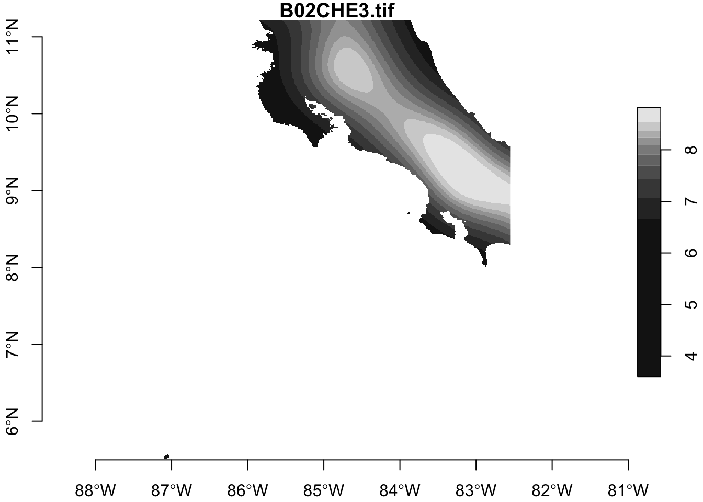
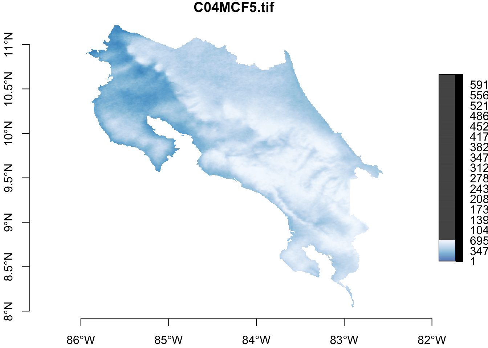

Untitled
library(tidyverse)
library(rio)
library(sf)
library(stars)
library(raster)
library(terra)sal <- import("01_datos/Conductividad_electrica.csv")head(sal)## ID X Y ce V5 V6 V7
## 1 31 544105 181098 0.1 NA Falta muestra 333 NA
## 2 32 533689 182574 0.1 NA 517 datos NA
## 3 33 525760 179443 0.1 NA NA
## 4 34 531280 186305 0.1 NA NA
## 5 35 532794 192734 0.1 NA NA
## 6 36 524312 200735 0.1 NA NAraster_list <- list.files(path = "01_datos/covs", full.names = TRUE)raster_list## [1] "01_datos/covs/B02CHE3.tif" "01_datos/covs/B04CHE3.tif"
## [3] "01_datos/covs/B07CHE3.tif" "01_datos/covs/B13CHE3.tif"
## [5] "01_datos/covs/B14CHE3.tif" "01_datos/covs/BARL10.tif"
## [7] "01_datos/covs/C01MCF5.tif" "01_datos/covs/C02MCF5.tif"
## [9] "01_datos/covs/C03MCF5.tif" "01_datos/covs/C04MCF5.tif"
## [11] "01_datos/covs/C05MCF5.tif" "01_datos/covs/C06MCF5.tif"
## [13] "01_datos/covs/C07MCF5.tif" "01_datos/covs/C08MCF5.tif"
## [15] "01_datos/covs/C09MCF5.tif" "01_datos/covs/C10MCF5.tif"
## [17] "01_datos/covs/C11MCF5.tif" "01_datos/covs/C12MCF5.tif"
## [19] "01_datos/covs/CHAGSW7.tif" "01_datos/covs/CRDMRG5.tif"
## [21] "01_datos/covs/CRUMRG5.tif" "01_datos/covs/CRVMRG5.tif"
## [23] "01_datos/covs/DEMENV5.tif" "01_datos/covs/DV2MRG5.tif"
## [25] "01_datos/covs/DVMMRG5.tif" "01_datos/covs/ENTENV3.tif"
## [27] "01_datos/covs/ES1MOD5.tif" "01_datos/covs/ES2MOD5.tif"
## [29] "01_datos/covs/ES3MOD5.tif" "01_datos/covs/ES4MOD5.tif"
## [31] "01_datos/covs/ES5MOD5.tif" "01_datos/covs/ES6MOD5.tif"
## [33] "01_datos/covs/EVEENV3.tif" "01_datos/covs/EX1MOD5.tif"
## [35] "01_datos/covs/EX2MOD5.tif" "01_datos/covs/EX3MOD5.tif"
## [37] "01_datos/covs/EX4MOD5.tif" "01_datos/covs/EX5MOD5.tif"
## [39] "01_datos/covs/EX6MOD5.tif" "01_datos/covs/EXTGSW7.tif"
## [41] "01_datos/covs/F01USG5.tif" "01_datos/covs/F02USG5.tif"
## [43] "01_datos/covs/F03USG5.tif" "01_datos/covs/F04USG5.tif"
## [45] "01_datos/covs/F05USG5.tif" "01_datos/covs/F06USG5.tif"
## [47] "01_datos/covs/F07USG5.tif" "01_datos/covs/I01MOD4.tif"
## [49] "01_datos/covs/I02MOD4.tif" "01_datos/covs/I03MOD4.tif"
## [51] "01_datos/covs/I04MOD4.tif" "01_datos/covs/I05MOD4.tif"
## [53] "01_datos/covs/I06MOD4.tif" "01_datos/covs/I07MOD4.tif"
## [55] "01_datos/covs/I08MOD4.tif" "01_datos/covs/I09MOD4.tif"
## [57] "01_datos/covs/I10MOD4.tif" "01_datos/covs/I11MOD4.tif"
## [59] "01_datos/covs/I12MOD4.tif" "01_datos/covs/LCEE10.tif"
## [61] "01_datos/covs/M01MOD4.tif" "01_datos/covs/M02MOD4.tif"
## [63] "01_datos/covs/M03MOD4.tif" "01_datos/covs/M04MOD4.tif"
## [65] "01_datos/covs/M05MOD4.tif" "01_datos/covs/M06MOD4.tif"
## [67] "01_datos/covs/M07MOD4.tif" "01_datos/covs/M08MOD4.tif"
## [69] "01_datos/covs/M09MOD4.tif" "01_datos/covs/M10MOD4.tif"
## [71] "01_datos/covs/M11MOD4.tif" "01_datos/covs/M12MOD4.tif"
## [73] "01_datos/covs/MANMCF5.tif" "01_datos/covs/MAXENV3.tif"
## [75] "01_datos/covs/MRNMRG5.tif" "01_datos/covs/N01MOD3.tif"
## [77] "01_datos/covs/N01MSD3.tif" "01_datos/covs/N02MOD3.tif"
## [79] "01_datos/covs/N02MSD3.tif" "01_datos/covs/N03MOD3.tif"
## [81] "01_datos/covs/N03MSD3.tif" "01_datos/covs/N04MOD3.tif"
## [83] "01_datos/covs/N04MSD3.tif" "01_datos/covs/N05MOD3.tif"
## [85] "01_datos/covs/N05MSD3.tif" "01_datos/covs/N06MOD3.tif"
## [87] "01_datos/covs/N06MSD3.tif" "01_datos/covs/N07MOD3.tif"
## [89] "01_datos/covs/N07MSD3.tif" "01_datos/covs/N08MOD3.tif"
## [91] "01_datos/covs/N08MSD3.tif" "01_datos/covs/N09MOD3.tif"
## [93] "01_datos/covs/N09MSD3.tif" "01_datos/covs/N10MOD3.tif"
## [95] "01_datos/covs/N10MSD3.tif" "01_datos/covs/N11MOD3.tif"
## [97] "01_datos/covs/N11MSD3.tif" "01_datos/covs/N12MOD3.tif"
## [99] "01_datos/covs/N12MSD3.tif" "01_datos/covs/NEGMRG5.tif"
## [101] "01_datos/covs/NIRL00.tif" "01_datos/covs/NIRL14.tif"
## [103] "01_datos/covs/OCCGSW7.tif" "01_datos/covs/P01CHE3.tif"
## [105] "01_datos/covs/P02CHE3.tif" "01_datos/covs/P03CHE3.tif"
## [107] "01_datos/covs/P04CHE3.tif" "01_datos/covs/P05CHE3.tif"
## [109] "01_datos/covs/P06CHE3.tif" "01_datos/covs/P07CHE3.tif"
## [111] "01_datos/covs/P08CHE3.tif" "01_datos/covs/P09CHE3.tif"
## [113] "01_datos/covs/P10CHE3.tif" "01_datos/covs/P11CHE3.tif"
## [115] "01_datos/covs/P12CHE3.tif" "01_datos/covs/POSMRG5.tif"
## [117] "01_datos/covs/PRSCHE3.tif" "01_datos/covs/QUAUEA3.tif"
## [119] "01_datos/covs/RANENV3.tif" "01_datos/covs/REDL00.tif"
## [121] "01_datos/covs/REDL14.tif" "01_datos/covs/S03ESA4.tif"
## [123] "01_datos/covs/S04ESA4.tif" "01_datos/covs/S05ESA4.tif"
## [125] "01_datos/covs/S06ESA4.tif" "01_datos/covs/S07ESA4.tif"
## [127] "01_datos/covs/S08ESA4.tif" "01_datos/covs/S09ESA4.tif"
## [129] "01_datos/covs/S10ESA4.tif" "01_datos/covs/SLPMRG5.tif"
## [131] "01_datos/covs/SW1L00.tif" "01_datos/covs/SW1L14.tif"
## [133] "01_datos/covs/SW2L00.tif" "01_datos/covs/SW2L14.tif"
## [135] "01_datos/covs/T01MOD3.tif" "01_datos/covs/T01MSD3.tif"
## [137] "01_datos/covs/T02MOD3.tif" "01_datos/covs/T02MSD3.tif"
## [139] "01_datos/covs/T03MOD3.tif" "01_datos/covs/T03MSD3.tif"
## [141] "01_datos/covs/T04MOD3.tif" "01_datos/covs/T04MSD3.tif"
## [143] "01_datos/covs/T05MOD3.tif" "01_datos/covs/T05MSD3.tif"
## [145] "01_datos/covs/T06MOD3.tif" "01_datos/covs/T06MSD3.tif"
## [147] "01_datos/covs/T07MOD3.tif" "01_datos/covs/T07MSD3.tif"
## [149] "01_datos/covs/T08MOD3.tif" "01_datos/covs/T08MSD3.tif"
## [151] "01_datos/covs/T09MOD3.tif" "01_datos/covs/T09MSD3.tif"
## [153] "01_datos/covs/T10MOD3.tif" "01_datos/covs/T10MSD3.tif"
## [155] "01_datos/covs/T11MOD3.tif" "01_datos/covs/T11MSD3.tif"
## [157] "01_datos/covs/T12MOD3.tif" "01_datos/covs/T12MSD3.tif"
## [159] "01_datos/covs/TMDMOD3.tif" "01_datos/covs/TMNMOD3.tif"
## [161] "01_datos/covs/TPIMRG5.tif" "01_datos/covs/TREL10.tif"
## [163] "01_datos/covs/TWIMRG5.tif" "01_datos/covs/VBFMRG5.tif"
## [165] "01_datos/covs/VDPMRG5.tif" "01_datos/covs/VW1MOD1.tif"
## [167] "01_datos/covs/VW2MOD1.tif" "01_datos/covs/VW3MOD1.tif"
## [169] "01_datos/covs/VW4MOD1.tif" "01_datos/covs/VW5MOD1.tif"
## [171] "01_datos/covs/VW6MOD1.tif"stars
rasters <- read_stars(raster_list)rasters[20]## stars object with 2 dimensions and 1 attribute
## attribute(s):
## CRDMRG5.tif
## Min. :-2903
## 1st Qu.: 0
## Median : 0
## Mean : -41
## 3rd Qu.: 0
## Max. : 1176
## dimension(s):
## from to offset delta refsys point values
## x 1 546 -87.102 0.0083342 GEOGCS["WGS 84",DATUM["WG... FALSE NULL [x]
## y 1 686 11.2168 -0.00833488 GEOGCS["WGS 84",DATUM["WG... FALSE NULL [y]cr <- st_read("01_datos/mask/CR_cg.gpkg")## Reading layer `CR_cg' from data source `/Users/manuelspinola/Documents/01-Manolo/R_Proyectos/Alban_salinidad/01_datos/mask/CR_cg.gpkg' using driver `GPKG'
## Simple feature collection with 1 feature and 6 fields
## geometry type: POLYGON
## dimension: XY
## bbox: xmin: -85.95189 ymin: 8.043422 xmax: -82.55642 ymax: 11.22162
## CRS: 4326st_crs(cr)## Coordinate Reference System:
## User input: 4326
## wkt:
## GEOGCS["WGS 84",
## DATUM["WGS_1984",
## SPHEROID["WGS 84",6378137,298.257223563,
## AUTHORITY["EPSG","7030"]],
## AUTHORITY["EPSG","6326"]],
## PRIMEM["Greenwich",0,
## AUTHORITY["EPSG","8901"]],
## UNIT["degree",0.0174532925199433,
## AUTHORITY["EPSG","9122"]],
## AUTHORITY["EPSG","4326"]]plot(rasters, axes = TRUE)
rasters_mask <- rasters[cr, crop = TRUE]## although coordinates are longitude/latitude, st_intersects assumes that they are planarplot(rasters_mask[10], axes = TRUE)
terra
raster_list <- list.files(path = "01_datos/prueba", full.names = TRUE)s <- stack(raster_list)s## class : RasterStack
## dimensions : 686, 546, 374556, 2 (nrow, ncol, ncell, nlayers)
## resolution : 0.008334203, 0.008334884 (x, y)
## extent : -87.10198, -82.55151, 5.49909, 11.21682 (xmin, xmax, ymin, ymax)
## crs : +proj=longlat +datum=WGS84 +no_defs +ellps=WGS84 +towgs84=0,0,0
## names : B02CHE3, B04CHE3s_crop <- crop(s, cr)s_mask <- mask(s_crop, cr)plot(s_mask)